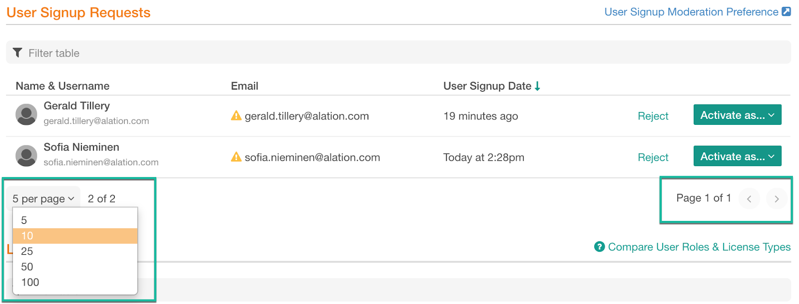

Manage Users¶
Alation Cloud Service Applies to Alation Cloud Service instances of Alation
Customer Managed Applies to customer-managed instances of Alation
Server Admins can manage users on the Users tab of the Admin Settings page.
Available actions:
Enable signup moderation
Manage signup requests
View existing users
View license information
Confirm user emails
Assign roles
Suspend user accounts
Users Tab Overview¶
Information on the Users tab is organized in three sections:
User Signup Requests
Licensed Users
Suspended Users
User Signup Requests¶
This table will only be filled if user signup moderation is enabled on your Alation instance. It lists users who signed up for access and are waiting to be approved.
As a Server Admin, you can:
Activate a user with a specific role
Reject the request
Licensed Users¶
This table lists all active Alation users. When a specific role is assigned to a user, the corresponding license seat gets consumed. When a user’s role is changed, the previously assigned license seat will be released, but the seat that corresponds to the newly assigned role will be consumed. The license consumption dashboard on the License tab will be recalculated.
System Users¶
Applies to 2023.3 and newer
Applies only to Alation Cloud Service on the cloud native architecture
System users represent OAuth client applications. Each client application has one system user. The sole purpose of a system user is to determine which Alation APIs can be used by the client application.
System users are managed by the client application on the Settings > Authentication page and can’t be edited or managed on the Users page.
System users are automatically created when an OAuth client application is created.
The system user’s Alation role can be changed by editing the client application.
If the client application is ever deleted, the system user will be suspended and will no longer appear on the Users settings page.
For more information about OAuth client applications, including how system users are managed, see Authenticate API Calls with OAuth 2.0.
Suspended Users¶
This table lists all suspended users. A suspended user cannot log in to Alation, and their license seat is freed.
You can reactivate a suspended user restoring their access to Alation with a specific role.
Filtering and Sorting¶
The content in all tables on the Users tab can be filtered and sorted.
Filtering¶
Filtering applies to the columns Name & Username and Email. To filter, start typing in the filter field on top of the table:
{kind=link}
The table will update displaying the users whose name, username, or email match the text you have typed. If filtering is applied to a table, you will see the (filtered) indicator at the bottom of the table next to the number of results:
{kind=link}
Sorting¶
Tables can be sorted by columns. A sortable column will display the Sort indicator on hover-over:
{kind=link}
Click the name of the column you want to sort by. When sorting is applied, the column will display a Sorted icon, descending or ascending next to its name:
{kind=link}
Number of Rows per Page¶
Tables use pagination. You can select the number of rows to be displayed on one page. To change the number of rows per page, click the <N> per page list at the bottom of a table and in the list that opens, select the number you prefer:
{kind=link}
Enable Signup Moderation¶
If necessary, you can enable Admin approval for new user sign-ups.
Note
From version 2021.1, it is possible to enable automatic suspension and activation of users accounts based on custom group membership. When this option is turned on, the default role and the User Signup Moderation Preference are deactivated. For details, see Use Custom Groups to Assign User Roles.
If moderation of new sign-ups is enabled, each new user who signs up for an Alation account has to be approved by a Server Admin before they can log in. Server Admins will receive an email notification when a new user has requested an account with Alation and can proceed to confirm or reject the new account.
By default, signup moderation is disabled.
To enable or disable sign-up moderation,
Click User Signup Moderation Preference on the top right of the User Signup Requests table. This will take you to the Authentication tab of the settings page.
Under User Signup Moderation Preference, find the switch Require Server Admin’s approval before new accounts become active.
Toggle the switch on to enable new account moderation or toggle it off to disable it.
Click View User Signup Requests to go back to the Users tab:
{kind=link}
Manage Signup Requests¶
New signup requests will appear in the User Signup Requests table on the Users tab if signup moderation is enabled: Enable Signup Moderation.
Emails of the new signups will appear as unconfirmed and will be marked with the Unconfirmed Email indicator icon.
You can either activate the user or reject the request. The users you activate will receive a notification email and will be able to confirm their email and log in to Alation:
{kind=link}
Activating Users¶
To activate a single user,
Find the user in the User Signup Requests table then click Activate As on the right. This will open a list of available roles:
Click a role you want to assign to the user. This user will be activated with this role, and their name will be moved to the Licensed Users table. Newly activated users will be notified using email. They will be able to confirm their email and log in to Alation:
{kind=link}
{kind=link}
Bulk-activation¶
You can activate all pending requests at once. To bulk-activate the requests, click Activate All Pending Users on the top right of the User Signup Requests table and in the confirmation dialog that opens, confirm the action. All new users will be activated with the Viewer role but you can change the role of each individual user if necessary.
Rejecting Signup Requests¶
You can reject new signup requests if the requestors are not authorized to access the Alation catalog of your organization. To reject,
Find the user in the User Signup Requests table and click Reject on the right.
Confirm your action in the confirmation dialog that opens. The signup request will be rejected.
View Existing Users¶
All active users in your Alation instance will be listed in the Licensed Users table. Use filtering and sorting on the table to find a specific user.
Each active user consumes a specific type of license depending on the role they are assigned. To learn more about licenses, see Licenses.
Viewing Role information¶
To view information about all available roles and their correlation with functional areas, click Compare User Roles on the top right of the Licensed Users table. An information pop-up with open that gives an overview of Alation roles.
Confirm Emails¶
This applies if the signup moderation is disabled.
When a new user signs up for an Alation account, they cannot log in until they have confirmed the email address they provided in the signup form. They will receive an email from Alation requesting to confirm their email. When they confirm it by clicking a link in the email message, their account will be confirmed and they will be able to log in and start working in Alation.
Bypass Email Confirmation¶
A Server Admin can force email confirmation for a user. To confirm an email for a user who signed up,
Find the user in the Licensed Users table. Unconfirmed emails are indicated with a warning icon. Hover over this warning icon and in the popup that opens, click Bypass Email Confirmation to confirm the email for a user. After you have confirmed it, the user will able to log in:
{kind=link}
Assign Roles¶
You can assign a role to a user when you activate them or you can change the role assignment for active users. By default, all new users who sign up are added with the default Viewer role.
Note
In V R7 (5.12.x) the default role cannot be changed.
From release 2020.3, the default role can be configured by a Server Admin on the Authentication Tab.
To assign a role to a user,
Find the user in the Licensed Users table.
In the User Role column, click the role name to open the list of available roles:
In this list, click the role you would like to assign to this user. It will be assigned and displayed in the User Role column for this user. Users will be automatically placed into the respective built-in Group that corresponds to their role.
{kind=link}
Note
From version 2021.1, it is possible to turn on auto-assignment of roles based on custom group membership when authentication is set to LDAP. For details, see Use Custom Groups to Assign User Roles.
Reassign Roles¶
You can change the role for a user. To reassign the role, click the current role and in the roles list that opens, click a different role, and confirm your choice.
Suspend Users¶
There is no ability to delete a user from Alation. Instead, a user must be suspended. By default, a Server Admin must suspend a user manually.
To suspend a user, assign the Suspended status to them. Suspended users will not be able to log in to Alation.
The Alation objects that a suspended user created or contributed to will remain in Alation and can be managed by Server Admins. The suspended user will be marked as Inactive in their Profile and as GONE if their name is selected in any of the Catalog fields.
Suspended user names will be moved to the Suspended Users table. You can reactivate a suspended user:
Find the user in the Suspended Users table.
For this user, click Activate as… on the right to open the list of available roles and click the role you would like to reactivate the user with. The user will be activated with this role and returned to the Licensed Users table.
Note
From version 2021.1, it is possible to enable automatic suspension and activation of users accounts based on custom group membership. For details, see Use Custom Groups to Manage User Suspension and Activation.
Revoke API Tokens¶
Applies from release 2020.3
A Server Admin can view API Tokens created by a specific user and revoke any of the existing tokens. If API tokens exist for a user, then this is indicated by the Revoke Tokens link in the User Tokens column of the Licensed Users table. For users who do not have any active tokens, this column will contain the word “None”.
To revoke API tokens from a user,
In the Licensed Users table, find the user from whom you want to revoke the API Access. You can use the filter field on top of the table to locate the user:
In the User Tokens column, click Revoke Tokens for this user. The Revoke Token dialog will open:
In the Revoke Token dialog, you can see the list of all Refresh tokens created by the user. Select the checkboxes for the token(s) you want to revoke and click Revoke.
Confirm the revocation. The selected tokens will be revoked and assigned the status Revoked. Users will not be able to access the Alation APIs using these tokens.
Note
Revocation of a token does not lock the ability of the user to create new API tokens if this user is an active user on the instance.